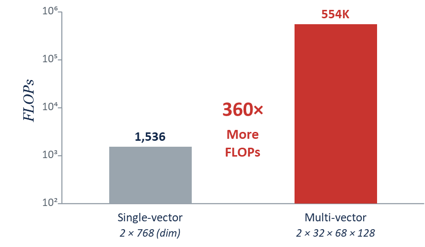
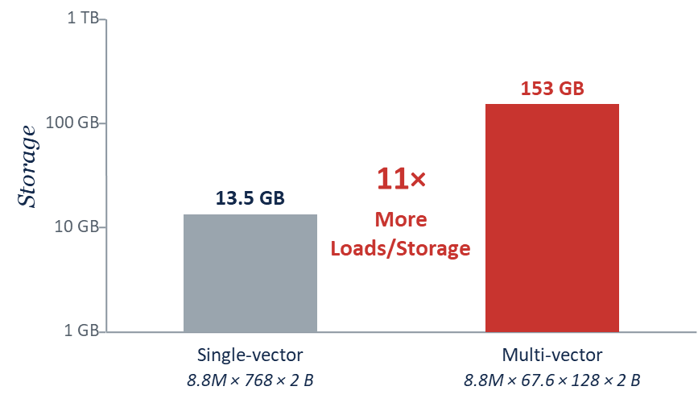
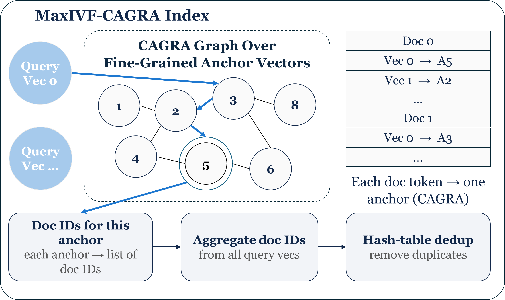
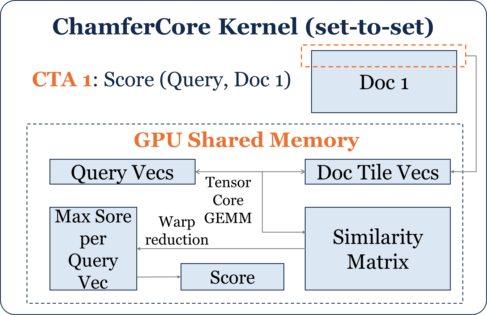
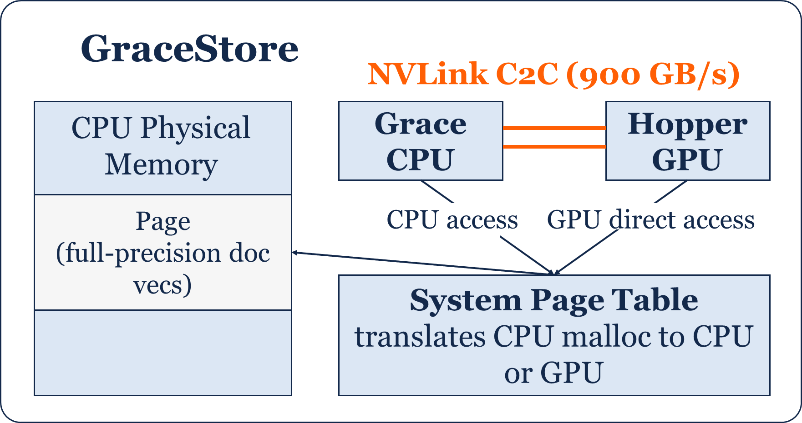
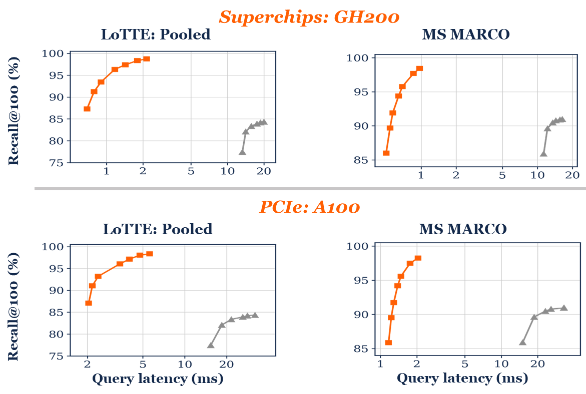

News
- 🎉 2026-05-31 We release the code at GitHub.
- 🎉 2025-11-24 Our work on VecFlow-Chamfer has been accepted at SIGMOD 2026!
Many emerging AI applications demand retrieval systems that go beyond document-level relevance and capture token-level semantics. Multi-vector search addresses this need through fine-grained semantic matching between token-level embeddings of queries and documents. However, it introduces significant system challenges, including compute-intensive set-to-set scoring, complex candidate filtering, and high memory overhead from storing dense token-level embeddings. Prior systems mitigate these challenges through GPU-based similarity calculation and indexing structures (e.g., IVFPQ-GPU) but often at the cost of reduced retrieval accuracy and suffer from low GPU utilization. We present VecFlow-Chamfer, a GPU-based vector data management system that enables low-latency and high-recall multi-vector search on modern Superchip architectures. VecFlow-Chamfer achieves this through a combination of three novel optimizations: (1) MaxIVF-CAGRA, a GPU-native, compression-free index tailored for multi-vector search with fine-grained anchor vectors enabling scalable index construction and low-latency, high-accuracy candidate generation via CAGRA-based GPU routing; (2) ChamferCore, a highly-optimized GPU kernel that enables single-digit millisecond Chamfer scoring over tens of thousands of candidate documents; and (3) GraceStore, a tiered vector storage layer that supports on-demand, low-latency access to full-precision embeddings across Grace-Hopper NVLink-C2C interconnects. Together, these techniques enable VecFlow-Chamfer to perform multi-vector search over hundreds of millions of document token embeddings with unprecedented high recall and low latency. Compared to state-of-the-art systems like PLAID and MUVERA, VecFlow-Chamfer achieves an order-of-magnitude lower latency while significantly improving recall.
Most retrieval systems represent a query and a document as one dense vector each and rank by a single similarity. Multi-vector search instead represents each query and each document as a set of token-level vectors, produced by models such as ColBERT. Relevance is then a set-to-set score: for every query token, take its best-matching document token, and sum those maxima. This is the Chamfer (MaxSim) score:
Token-level matching captures fine-grained relevance that a single fixed-size vector cannot, since a fixed embedding dimension caps how many distinct top-k results it can represent (Weller et al., On the Theoretical Limitations of Embedding-Based Retrieval, 2025).
This expressiveness is expensive on two axes. Scoring cost grows because every query token must be compared against every document token, turning one similarity per pair into hundreds. Storage and memory cost grow because each document now holds many token vectors instead of one.
On MS MARCO, multi-vector scoring needs roughly 360 times more compute per pair than single-vector, and the full-precision corpus is about 11 times larger, exceeding a single GPU's memory. These two pressures, heavy set-to-set compute and a corpus too large for GPU memory, motivate the VecFlow-Chamfer design: run scoring on the GPU for its bandwidth and Tensor Cores, and keep full-precision document vectors in large CPU memory, fetched to the GPU on demand.


VecFlow-Chamfer is built for Superchip architectures such as the NVIDIA GH200, where a CPU and a GPU sit on the same package and share a coherent address space over a high-bandwidth NVLink-C2C link (900 GB/s), far faster than PCIe. VecFlow-Chamfer matches each stage of the work to the right place in this hierarchy: the compact index stays in GPU memory, the full-precision corpus stays in the larger CPU memory, and the GPU reads it directly over C2C.
Search runs in three stages. Candidate Generation routes query tokens to nearest anchors with MaxIVF-CAGRA to form a small candidate set. Proxy-based Filtering scores those on anchor vectors with ChamferCore and prunes on the GPU. Final Reranking computes exact full-precision Chamfer on the survivors, fetched from CPU memory over C2C. Each stage passes fewer documents on, so the costly full-precision step runs on only a few.

MaxIVF-CAGRA generates candidates with fine-grained anchors. Traditional IVF sets its number of centroids on the order of the square root of N, which is typically under 0.1% of the tokens; MaxIVF-CAGRA instead uses more than 1% of the tokens as anchors, making each anchor far more selective. One GPU CAGRA graph is used twice: at build time it assigns each document token to its nearest anchor, and at search time it routes query tokens to nearest anchors. The matched anchors map to document IDs, which are aggregated across query tokens and deduplicated. This reaches the same coverage as prior methods with fewer candidates, at lower candidate-generation cost, while keeping index construction time comparable even with far more anchors.

ChamferCore is a fused GPU kernel for set-to-set scoring. It launches one CTA per query-document pair for massive parallelism, computes the query-by-document similarity matrix with a Tensor Core GEMM, and uses shared-memory tiling with a running per-query max so the matrix never goes to global memory. Similarity, max, and sum are fused into a single kernel, scoring 30K candidate documents in 0.12 ms on MS MARCO.

GraceStore keeps full-precision document vectors in CPU memory and lets the GPU read them on demand. On a Superchip, the CPU and GPU share a page table and coherent memory, so the GPU accesses these vectors directly over C2C with no explicit copy. The vectors are small and scattered, so a naive cudaMemcpy wastes bandwidth; GraceStore's direct access reaches about 380 GB/s, matching a contiguous transfer, so final reranking runs on full precision with no compression and no accuracy loss.
On conventional PCIe GPUs such as the A100, the CPU-GPU link is PCIe 4.0 at about 64 GB/s, over 10 times slower than C2C, so fetching full-precision vectors is the bottleneck. VecFlow-Chamfer inserts one extra stage: a PQ-approximate Chamfer filter that shrinks the candidate list before final full-precision reranking, cutting how much data crosses PCIe. It reuses the same MaxIVF-CAGRA index and ChamferCore kernel, adapted to PQ-compressed vectors, with the PQ vectors kept in GPU memory. Even with this added step, VecFlow-Chamfer still beats prior systems in both recall and latency.
On GH200, VecFlow-Chamfer is up to 16.9 times faster than PLAID while improving recall by 7.5 points, reaching 98.45% Recall@100 in 0.97 ms versus PLAID's 91% in 16.35 ms on MS MARCO. PLAID plateaus near 90% recall, while VecFlow-Chamfer reaches 98% in under 1.2 ms. The design also generalizes to PCIe GPUs: on the A100 it still beats PLAID, reaching 98% recall at 2.23 ms on LoTTE: Lifestyle and 4.76 ms on Pooled.
